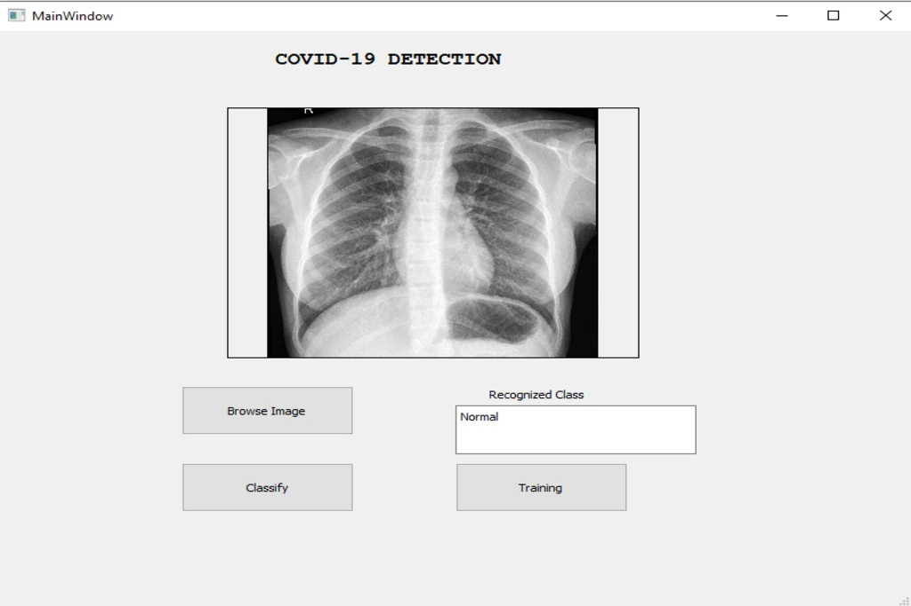
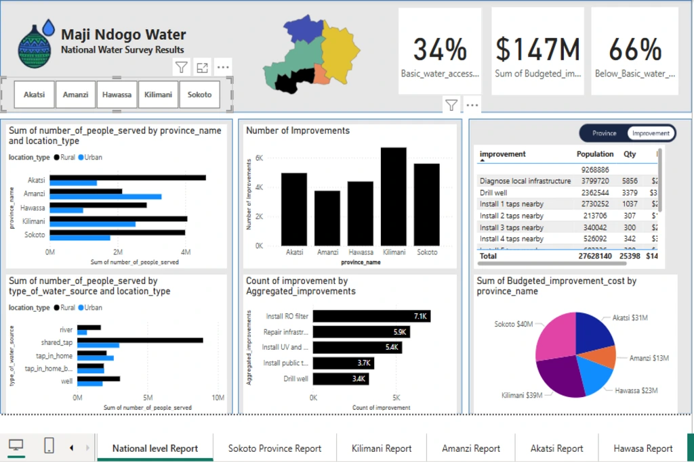
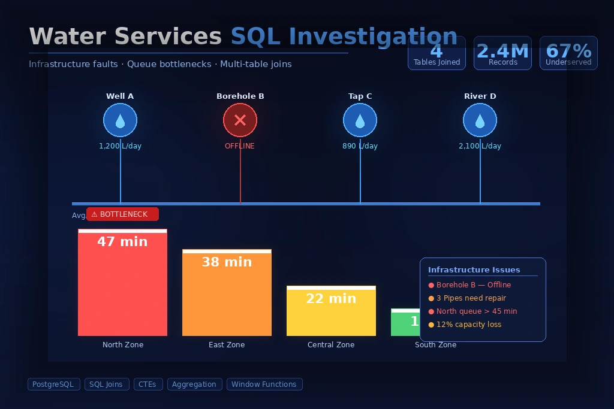

Customer Relations Officer
Handled client engagement and data-driven feedback analysis at Enterprise Trustees, improving retention and satisfaction.
Data Analyst and AI graduate with hands-on experience in machine learning, predictive analytics, and data visualization. I build intelligent solutions that transform complex data into clear, impactful decisions.
Data Analyst with a strong foundation in AI, focused on transforming complex datasets into clear, actionable insights.
I am a Data Analyst and Artificial Intelligence graduate based in Ghana, passionate about solving real-world problems using data.
I have hands-on experience in predictive analytics, machine learning, and data visualization, working with tools like Python, SQL, Power BI, and TensorFlow. Through internships and projects, I’ve built solutions that automate workflows, improve decision-making, and uncover hidden insights in complex datasets.
My focus is on building scalable, data-driven systems that deliver measurable impact — from reducing reporting time to optimizing business processes.
Data analysis, machine learning, automation
Data querying, joins, optimization
Model building, anomaly detection, prediction
Power BI, dashboards, storytelling
Handled client engagement and data-driven feedback analysis at Enterprise Trustees, improving retention and satisfaction.
Built automation workflows and dashboards using Uipath, Python, Tableau, and Power BI to improve reporting efficiency.
Developed deep learning models including COVID-19 detection using TensorFlow, Keras, and CNN architectures.
Completing BTech in Artificial Intelligence, transitioning into full-time data science and analytics roles.
“Transforming raw data into insights that drive smarter decisions.”
A combination of analytical thinking, technical expertise, and data-driven problem solving built through projects and internship experience.
Experienced in data cleaning, analysis, automation, and predictive modeling using Python libraries.
Built predictive models, classification systems, and deep learning solutions for real-world datasets.
Creating dashboards and visual reports using Tableau, Power BI, zoho, Matplotlib, and analytics storytelling.
Writing efficient queries, managing structured datasets, and performing data extraction for analysis.
Transforming raw data into actionable insights to support business decisions and reporting workflows.
Experience building automation workflows, APIs, and AI-driven solutions for productivity and efficiency.
I enjoy solving problems through data-driven thinking, combining analytical skills with practical implementation to create efficient, real-world solutions. My focus is always on turning complex information into clear insights that support smarter decisions.
A snapshot of my education, internship experience, technical skills, and journey in data analytics and artificial intelligence.
Hands-on internship and professional experience across analytics, automation, AI, and customer-focused business operations.
Built internal API solutions to automate customer response workflows, improving communication efficiency and reducing response handling time significantly.
Worked on deep learning solutions for COVID-19 detection using TensorFlow, CNN models, and PyQt5 interfaces for real-time predictions.
Built interactive dashboards using Tableau and Power BI to improve reporting workflows and support business insights through data visualization.
Designed automation workflows and contributed to process optimization using UiPath and business efficiency analysis.
Managed customer relations, analyzed feedback trends, and supported client retention through strong communication and service delivery.
Academic journey combining business knowledge with technical expertise in artificial intelligence and analytics.
Focused on machine learning, data analytics, statistics, computer vision, cloud computing, and intelligent systems.
Completed undergraduate coursework in business administration with focus on communication, management, and organizational processes.
Technical strengths and analytical capabilities developed through internships, projects, and practical implementation.
A collection of data analytics, machine learning, automation, and visualization projects showcasing practical problem-solving and real-world insights.

CNN-based medical image classification using TensorFlow, Keras, and PyQt5.

Data-driven analysis to identify underserved regions and optimize water resource allocation.

Complex SQL joins and analysis to uncover infrastructure issues and queue bottlenecks.

Interactive Power BI dashboard for KPI tracking and business reporting.

Internal API system developed to generate professional, casual, and friendly customer email replies, improving support efficiency and response consistency.

Predictive analytics project exploring employee retention patterns and trends.

Structured SQL workflows for extracting, cleaning, and analyzing large datasets.

Visual storytelling dashboards built using Tableau, Matplotlib, and Power BI.
Feedback from founders, employers, and collaborators who have worked with me across data analytics, automation, AI solutions, and digital projects.

“Teddy consistently delivered quality work with attention to detail and professionalism. His contributions improved workflow efficiency and supported content-driven digital growth across our platforms.”

“The email response automation system Teddy developed significantly improved consistency and reduced response handling time. His technical problem-solving brought measurable efficiency to customer communication workflows."

“Teddy approaches projects with strong analytical thinking and a willingness to learn quickly. He communicates ideas clearly and delivers practical, data-driven solutions.”
Practical digital solutions combining data analytics, automation, AI, and modern web technologies to solve real business problems.
Transforming raw data into meaningful insights through analysis, reporting, and visualization to support smarter business decisions.
Building predictive models and intelligent systems using machine learning techniques to solve real-world challenges.
Designing automated processes that reduce manual tasks, improve productivity, and streamline business operations.
Developing responsive websites and modern applications focused on functionality, user experience, and scalability.
Creating interactive dashboards with Power BI, Tableau, and Python to monitor metrics and communicate insights clearly.
Supporting online businesses with digital tools, platform setup, workflow integration, and scalable online solutions.
Common questions about my services, technical skills, project workflow, and how I approach data, AI, automation, and development solutions.
I specialize in data analytics, machine learning, automation systems, dashboards, AI-powered solutions, and web-based applications that solve real business problems.
I work with Python, SQL, Power BI, Tableau, TensorFlow, spark, Scikit-learn, Pandas, NumPy, Excel, and modern web technologies for analysis, automation, and development.
Yes. I create interactive dashboards and reporting systems using Power BI, Tableau, and Python to help businesses track performance and gain actionable insights.
Yes. I am open to freelance, remote collaborations, internships, and contract-based projects across analytics, automation, and development.
I focus on understanding the problem first, analyzing data or system requirements, building efficient solutions, and refining results through testing and optimization.
Interested in collaborating, hiring, or discussing a project? Feel free to reach out for opportunities, freelance work, or professional inquiries.
If you have a project, freelance opportunity, collaboration, or technical inquiry, feel free to reach out. I’m always open to discussing ideas and solving real-world problems.
{kind=link}
{kind=link}
{kind=link}